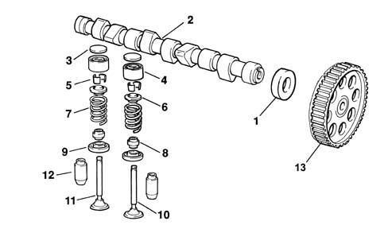
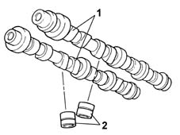
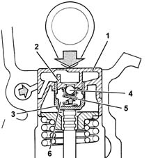
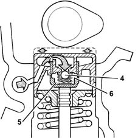
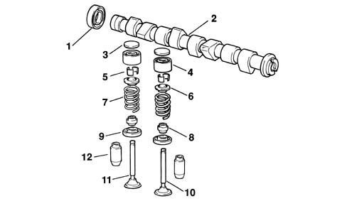

Introduction - TIMING SYSTEM
- Path
- Descriptions > 10 ENGINE > 1036 TIMING SYSTEM > Introduction - TIMING SYSTEM
- Kind
- system description
- Applies to
- engines: 1.2 8v, 1.6 16v, 1.3 JTD 16V, 1.9 JTD 8V; all production periods
- Interactive page
- https://sloeber94.github.io/elrnDB-fDbl/en/#/2585386
Applies to: engines: 1.2 8v; all production periods
The timing system is the collection of components which control the opening and the closing of the inlet and exhaust valves allowing the flow of the air/fuel mixture and burnt gases.
These components are operated by the crankshaft and the movement is transmitted via a toothed belt to the camshafts which, in turn, act on the valves. The various components should be perfectly synchronized (TIMED), if this is not the case, the valves could foul against the upper part of the pistons.
There are the same number of suitably positioned cams as there are valves to operate; at the front, it is prepared for the fitting of the toothed pulley, through which the motion of the crankshaft is received, by means of a suitably tensioned belt (see 'repair procedures' section).

1, Camshaft oil seal
2, Camshaft
3, Tappet adjustment shim
4, Tapppet
5, Cotters
6, Upper shim
7, Spring
8, Oil seal
9, Lower shim
10, Inlet valve
11, Exhaust valve
12, Valve guide
13, Camshaft pulley
The camshaft is the component which, through the cams, opens the valves for the required time.
Since in 4 stroke engines the working cycle takes place during two revolutions of the crankshaft, whilst the valves have to open only once during the cycle, the camshaft only has to rotate once; therefore, the toothed pulley fitted on the camshaft will have twice the number of teeth as the pulley fitted on the crankshaft.
Applies to: engines: 1.6 16v; all production periods
CAMSHAFTS
Two overhead camshaft, made from spheroid cast iron, operated by a toothed belt.
There are the same number of suitably positioned cams as there are valves to operate. at the front, it is prepared for the fitting of the toothed pulley, through which the motion of the crankshaft is received, by means of a suitably tensioned belt (see 'repair procedures' section).

Hydraulic tappets
The hydraulic tappets automatically cancel the valve clearance during engine operation, with the advantage of reducing:
- maintenance interventions
- engine noise.
Operation in open stage
When the camshaft cam acts on the cup (1) and consequently the piston (2), the oil trapped in the chamber (6), because the ball valve (4) closes, transmits the movement of the piston (2) directly to the sleeve (3) and so to the valve. During this stage, because of the high pressure to which it is subjected, some of the oil in the chamber (6) leaks through the tiny gap between the piston (2) and sleeve (3).

Operation in closed stage
While the valve is closed, so that the tappet, pushed by the action of the spring (5), follows the profile of the cam, a vacuum is created inside the chamber (6) which causes the ball valve (4) to open, allowing oil to enter. The oil entering the chamber (6) replaces the oil which leaked out previously while the valve was open.

Applies to: engines: 1.9 JTD 8V; all production periods
There are the same number of suitably positioned cams as there are valves to operate. At the front, it is prepared for the fitting of the toothed pulley, through which the movement of the crankshaft is received, by means of a suitably tensioned belt.

1, Oil seal
2, Camshaft
3, Adjustment shim
4, Tapppet
5, Cotters
6, Upper shim spring
7, Spring
8, Oil seal
9, Lower shim
10, Inlet valve
11, Exhaust valve
12, Valve guide
The camshaft is the component which, through the cams, opens the valves for the required time. Since in 4 stroke engines the working cycle takes place during two revolutions of the crankshaft, whilst the valves have to open only once during the cycle, the camshaft only has to rotate once; therefore, the toothed pulley fitted on the camshaft will have twice the number of teeth as the pulley fitted on the crankshaft. therefore, the toothed pulley fitted on the camshaft will have twice the number of teeth as the pulley fitted on the crankshaft.